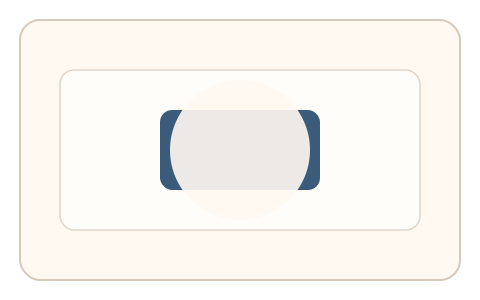
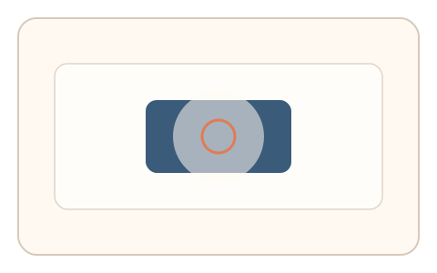
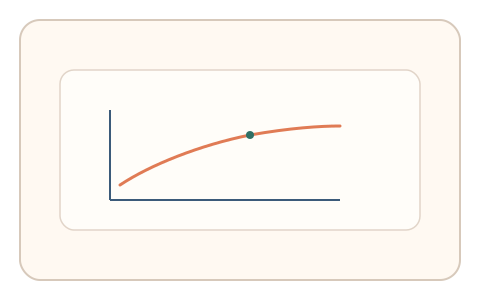

#36
视觉思考范式：时域/适应/残影
已扩展
眩光恢复定位
眩光遮罩逐步衰减，记录首次可辨识时刻与定位策略作为恢复特征。
概念原文
叠加眩光遮罩后逐步衰减，用户在“首次可辨识”时点击目标。记录恢复斜率与点击策略。
用眩光恢复的时间过程作为人类视觉特征。
研究背景
眩光会降低对比敏感度并干扰目标识别，恢复过程具有时间梯度与个体差异。通过测量首次可辨识时刻与点击策略，可提取稳定的视觉恢复信号。
核心机制
- 在场景上叠加眩光遮罩并逐步衰减。
- 目标位于遮罩下方，用户等待可辨识。
- 用户在首次可辨识时点击目标。
- 记录恢复时间与点击路径。
用户流程
- 步骤 1：用户看到强眩光遮罩覆盖目标。
- 步骤 2：遮罩衰减，用户等待目标出现。
- 步骤 3：用户点击目标，系统记录判定。
判定信号
恢复时间斜率
眩光恢复具有可测的时间梯度。
点击路径与犹豫节奏
真实恢复通常伴随短暂确认与微调。
判定逻辑
拟合恢复时间分布并结合点击前停顿，要求与人类恢复曲线一致；过快或无犹豫判异常。
对抗面
- 脚本固定等待时间后点击
- 重放真实用户的点击序列
防御与缓解
- 随机化眩光强度、衰减曲线与目标位置
- 引入轻微噪声与遮罩扰动降低模板化
- 叠加鼠标轨迹与时序信号进行多信号验证
可达性与风险
提供低眩光或替代任务模式，避免对光敏或低视力用户造成不适。
- 眩光刺激可能引起不适
- 显示设备亮度差异影响恢复时间
可视化状态

状态 1：眩光遮罩
目标被强眩光遮罩覆盖。

状态 2：恢复定位
遮罩衰减后点击目标。

状态 3：恢复判定
分析恢复斜率与点击策略。
参考资料
Glare (vision)
说明眩光对视觉识别的影响。
Contrast sensitivity
说明眩光对对比敏感度的影响。